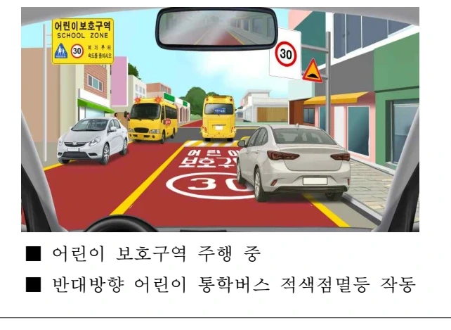

846. Which of the following are the TWO safest ways to proceed in the given situation?

- ①Honk continuously to alert others of danger while passing.
- ②Use headlights to signal “danger” to the school bus driver while passing.
- ③Be cautious as children may suddenly run out from between illegally parked vehicles on the right.
- ④Come to a complete stop before reaching the school bus on the left, and then pass by it slowly.
- ⑤Quickly pass the stopped school bus that is picking up or dropping off children on the right in order to get out of the alley.
Show answer
Answer
③ Be cautious as children may suddenly run out from between illegally parked vehicles on the right.
④ Come to a complete stop before reaching the school bus on the left, and then pass by it slowly.
Reference
When a children's school bus is stopped on the road and a device such as a flashing light is operating to indicate that children or infants are getting on or off, the driver of a car traveling in the lane where the children's school bus is stopped and the lane immediately next to the lane must stop temporarily before reaching the children's school bus, check for safety, and then drive slowly. Additionally, on roads without a center line or roads with one lane in each direction, drivers of cars traveling in the opposite direction must also stop temporarily and check for safety before reaching the children's school bus and then drive slowly. (Article 51 of the Road Traffic Act)
Reference text is a machine translation for study.